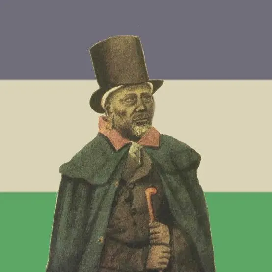

Khotso, Pula, Nala. Welcome to the Basotho Cultural Heritage website, an online home celebrating the history, traditions, and spirit of the Basotho people. Here, we invite you on a journey to the "Kingdom in the Sky", a nation rich with ancestral stories, majestic mountains, and a culture from love and unity. Whether you are of Basotho descent, a passionate historian, or a curious visitor, we extend a warm hand of Lumela (Hello) as you explore the legacy of our nation's past and present.
The purpose of this website is to serve as a digital repository and educational resource dedicated to preserving, promoting, and sharing the unique cultural heritage of the Basotho nation. Our mission is to safeguard both the tangible and intangible aspects of our history—from the ancient rock paintings of the San people and the historic mountain fortress of Thaba-Bosiu to the enduring traditions of music, dance, and craftwork. By documenting and showcasing our heritage, we aim to foster a deeper understanding and appreciation of Basotho identity, ensuring that these traditions are passed down to future generations and shared respectfully with the world.
